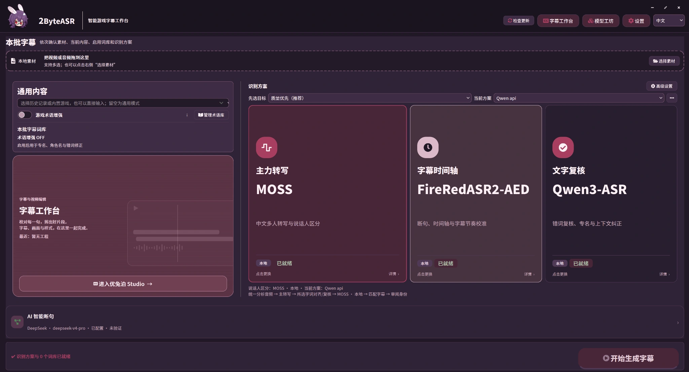
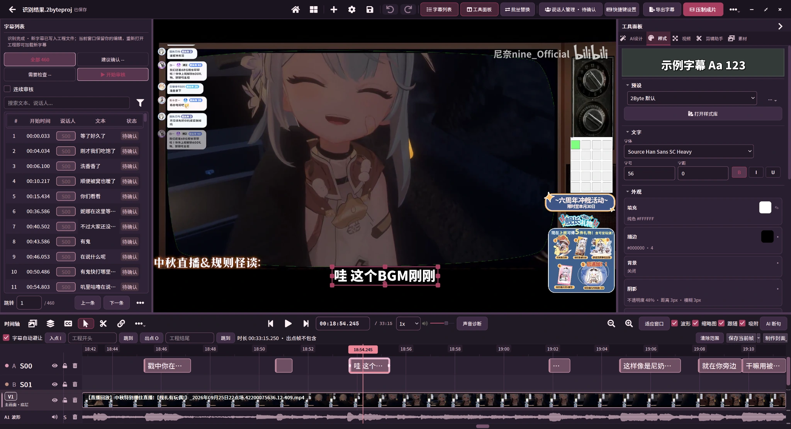

多模型识别与字级对齐
分别选择主力转写、字幕时间轴和文字复核。转写确定文字内容，对齐补充每个字或词的时间位置，复核提供另一份文本依据。
WINDOWS x64 · 0.2.6-test.2 测试版
面向直播切片、游戏视频与口播内容。
集成转写、字级对齐、文字复核与 AI 断句，
以及字幕精修、特效设计与视频输出。

识别方案示例：MOSS 负责转写，FireRedASR2-AED 提供字级依据，Qwen3-ASR 参与文字复核。模型与辅助步骤按需选择。点击图片放大。
按角色选择识别模型，保留字级时间信息用于后期编辑；术语库与说话人字幕轨，服务于持续制作同一类内容。
分别选择主力转写、字幕时间轴和文字复核。转写确定文字内容，对齐补充每个字或词的时间位置，复核提供另一份文本依据。
结合上下文整理错词和分句，再利用已有时间信息确定字幕边界。识别与分句结果仍可人工修改。
手动录入或让 AI 搜索角色、技能和别名，保存词条与纠错关系供后续任务复用；已启用词库用于相关校对、匹配与纠错步骤。
按方案区分说话人，人工命名、调整归属，在不同字幕轨上编辑，并合并或按说话人导出。短应答和重叠发言仍需检查。
对照视频、波形和字幕修改文字与起止时间；有字级时间戳时，可按字拆分、裁剪与合并，减少手工寻找切点。
直接套用已有样式，或描述字体、材质、框线和入退场动效，让 AI 生成字幕设计，预览后采用。
结合 B 站格式的弹幕 XML 与字幕分析片段，给出带时间范围的剪辑建议；可预览、调整后加入剪辑。建议不代替内容取舍。
在多轨时间轴组织视频和音频，剪切、裁剪、调整片段；导出字幕文件，或把字幕及特效合成到视频。
这是从素材到输出的使用路径。字幕生成中的转写、对齐、复核与断句按方案组合，不要求所有模型依次运行。
识别后继续在同一工程中校对文字、调整切点和组织视频片段。已有字级时间戳可用于字幕拆分与裁剪，不必只凭句子级起止时间定位。

以下是已接入的代表选项，具体角色以应用中的方案选择为准。无需一次安装全部模型。
| 选项 | 用途与条件 |
|---|---|
| MOSS-Transcribe-Diarize | 主力转写及说话人区分；本版使用 NVIDIA CUDA。 |
| FireRedASR2-AED | 字级时间轴，也可用于转写；本版使用 NVIDIA CUDA。 |
| Qwen3-ASR 1.7B | 本地转写或文字复核；本版使用 NVIDIA CUDA。 |
| Qwen3-ForcedAligner 0.6B | 根据已有文字补充字／词时间戳；本版使用 NVIDIA CUDA。 |
| SenseVoice Small | 本地转写或文字复核，可使用 CPU；不提供 MOSS 的多人身份区分。 |
| 在线识别 | 已接入阿里云 Qwen 音频、Groq Whisper、OpenAI 转写等渠道，需相应服务凭据；字级时间与说话人能力因接口而异。 |
本地识别和手动编辑不要求在线 API。AI 断句、文本校对、术语搜索、字幕设计与片段分析需要相应 AI 服务。 API 需密钥；已接入的 CLI 渠道需安装并登录。使用云端服务时，相关音频、文本或设计输入会发送给所选服务，并可能计费。
| 类型 | 主要格式 |
|---|---|
| 音视频输入 | MP4、MKV、MOV、WebM、FLV、AVI；WAV、MP3、M4A、FLAC、AAC。具体编码需能被解码。 |
| 字幕及辅助输入 | SRT、ASS；B 站格式弹幕 XML。普通字幕文件不自带逐字时间。 |
| 字幕输出 | SRT、ASS、TXT、JSON；可输出合并字幕、说话人分轨，或两者。 |
| 视频输出 | MP4、MKV、MOV；按容器选择 H.264、HEVC 或 AV1（MOV 不提供 AV1）。 |
视频编码可使用软件编码，或经探测可用的 NVIDIA NVENC、Intel QSV、AMD AMF。这与 ASR 的 CUDA 需求不同；编码加速不等同于整段特效渲染耗时。完整字幕动效请以压制成片为准，SRT／ASS 不等同于完整 AI 特效作品。
已知问题：当前附件在自定义用户数据目录时，部分入口的工程路径可能不一致。原工程未显示时先核对路径，不要用空工程覆盖。
反馈请附版本、复现步骤和截图，移除密钥等隐私信息。源码采用 Apache-2.0；模型与第三方组件遵循各自许可，见第三方声明。